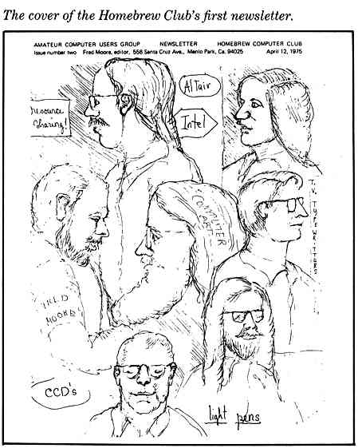

Beyond Open Source
Jason Casden (@cazzerson)
Bret Davidson
2015 LITA Forum
Slides: cazzerson.github.io/LITA-2015-slides
This talk starts where we usually end.
"[W]ho would be the best person on your team to talk with about the technical requirements and skills needed for us to install SUMA and get it up and running. For example, do we need a computer programmer with such and such skills. I’m sure you have good documentation available, however, we would like to talk with someone. We are also curious as to how much time it would take to get SUMA working for us. I am not sure we have the expertise in-house."
- librarian at a RU/H research university (with permission)
On canceling a pilot project...
"Ultimately, I didn’t want to get on our IT support’s bad side and because I’m not allowed to play with our development servers I can’t exactly go at the installation process alone."
- librarian at a RU/VH research university you've totally heard of and might work at (with permission)
How has free software supported growing user communities?
1950s-1960s: The Great Unbundling
"In the early days of computing, the need to generate massive adoption was strong and the compatibility threat was weak—open-source software reigned supreme."
Martin Campbell-Kelly & Daniel D. Garcia-Swartz. (2009). "Pragmatism, not ideology: Historical perspectives on IBM's adoption of open-source software."
A-2 system

"Amazing Grace: Hopper's Computer Innovations." Vassar Hub.

Free? software
Big vendors, big machines, big users.
"Such practices allegedly included anticompetitive price discrimination such as giving away software services for "the purpose or with the effect of . . . enabling IBM to maintain or increase its market share . . . . " (Id. at 9.) The Government also alleged that IBM's bundling of software with "related computer hardware equipment" for a single price was anticompetitive. (Id. at 10.)"
1970s: Stop the hobbyists!
The cover of the Homebrew Computer Club's first newsletter.
{kind=link}
{kind=link}

"One thing you do do is prevent good software from being written. Who can afford to do professional work for nothing? What hobbyist can put 3-man years into programming, finding all bugs, documenting his product and distribute for free? The fact is, no one besides us has invested a lot of money in hobby software. We have written 6800 BASIC, and are writing 8080 APL and 6800 APL, but there is very little incentive to make this software available to hobbyists. Most directly, the thing you do is theft."
Bill Gates. (1976). "Open Letter to Hobbyists."
1980s: My parents get a computer.


{kind=link}
Shareware

GNU, BSD, MIT licenses
"Unix is not my ideal system, but it is not too bad. The essential features of Unix seem to be good ones, and I think I can fill in what Unix lacks without spoiling them. And a system compatible with Unix would be convenient for many other people to adopt."
Richard Stallman. (1985). "The GNU Manifesto."
1990s-Now
My grandparents get a computer.
Gateway 2000 1994 Desktops.

Feb 3, 1998: "Open Source"
"The conferees believed the pragmatic, business-case grounds that had motivated Netscape to release their code illustrated a valuable way to engage with potential software users and developers, and convince them to create and improve source code by participating in an engaged community. The conferees also believed that it would be useful to have a single label that identified this approach and distinguished it from the philosophically- and politically-focused label "free software." Brainstorming for this new label eventually converged on the term "open source", originally suggested by Christine Peterson."

"The more recent switch to hybrid strategies reveals (a) an attempt to recreate, via open-source software, the single-platform scenario that IBM achieved with System/360 (and that IBM failed to recreate, in a proprietary context, via SAA), and (b) an attempt to boost revenues from middleware and services while allowing the old cash cows (e.g. proprietary operating-system software) to peacefully die an unavoidable death."
Martin Campbell-Kelly & Daniel D. Garcia-Swartz. (2009). "Pragmatism, not ideology: Historical perspectives on IBM's adoption of open-source software."
"In the open source community there exists a tremendous need for exactly the skills librarians have always used in making information resources truly useful. In particular, systems testing, evaluation, and feedback to open source designers is welcome and even sought after; documentation for open source systems is always needing improvement; instructional materials for open source products are often lacking. These are all areas in which librarians excel."
Dan Chudnov. (1999). "Open Source Library Systems: Getting Started."
"We hope the Code4Lib Journal can manifest the values that have been successful for the Code4Lib community, while providing increased access to the collective knowledge and experience held throughout our diverse professional networks and local organizations, increasing cross-pollination and collaboration among library technology innovators–and helping more people and organizations become innovators."
Jonathan Rochkind. (2007). "Editorial Introduction — Issue 1." Code4Lib Journal.
Our software generally privileges some users over others.
Libtech should be able to thrive in diverse environments.
2011-2012 ALA Public Library Funding & Technology Access Study
"I believe that building and maintaining library software is vitally important work and it's too big a job to leave to a small group of people. We are creating the future of libraries here."
Bess Sadler. (2013). "Creating a Commons."
We've done a good job of supporting collaborative development.
Our code is more robust, reliable, and open.
We have more flexibility and more choices.
Current approaches are for those who are almost there.
Many can't manage servers
or don't have staff.
Can our tools make our software
more available?
We need conscientious software
"Our software is like children. ... We expect that after a time the child will mature, will grow up, will be able to take care of itself, to solve problems, to cope, and perhaps to contribute something new. Initially selfish—for what other options are there?—the child becomes responsible. With luck or persistence or as the result of good upbringing, the child may become conscientious.
Shall we hope similarly for our software?"
Richard P. Gabriel & Ron Goldman. (2006). "Conscientious Software."
Teaching software how to create
an environment in which it can thrive.
One way to increase the usefulness of open-source software is to make it
easier to install, maintain, and evaluate.
Stopwatch technology availability metrics
For a given user group at a minimum rate of success.
1. Time to pilot on a laptop
2. Time to export data
3. Time to update dependencies
4. Time to upgrade application
5. Time to migrate application
6. Time to new production deployment
7. Time to reasonable security
Task performance metrics
- Use the same user group within each set of metrics
- Use the same success rate within each set of metrics
- Assess all metrics in the set
Example metric definitions
- Time to pilot for subject liaison librarians with 90% success
- Time to pilot for assessment librarians with 50% success
- Time to pilot for systems administrators with 80% success
What's absent?
- Time to pilot on a laptop
- Time to export data
- Time to update dependencies
- Time to upgrade application
- Time to migrate application
- Time to new production deployment
- Time to reasonable security
This is about the ability to
implement and use software.
What might improve some of these metrics?
Documentation
{kind=link}
Installers
"Create a database for WordPress on your web server."
Vendor-specific deploy scripts
Hosted & Managed Services


Hydra in a Box
Hydra-in-a-Box is a project to extend the existing Hydra project codebase and its vibrant community to build, bundle, and promote a feature-rich, robust, next-generation digital repository that is easy to install, configure, and maintain.
Virtualization


Containers in the Cloud
For software development, when programmers check their code into git, a Dockerfile could be included in the source code, allowing for quick testing of code on remote servers or as a demonstration tool to let others quickly bring up their own versions of an application without having to worry about specific building instructions or dependency management.
John Fink. (2014). Docker: a Software as a Service, Operating System-Level Virtualization Framework.
The goal
If you can install Firefox,
you can install our software.
Software that can be managed more easily, using less IT resources, by a wider audience of users.
wider ≠ bigger
wider === different
Opening archives with social media
Community cultural organizations
Lentil
Social Feed Manager
“Along with email, social media will probably provide the main source of information for researchers studying our current time. However, our institution just does not have the resources right now to collect and store the social media of other people or organizations.”NCSU Social Media Archives Toolkit survey of North Carolina Cultural Heritage Organizations
"New Voices and Fresh Perspectives" project
North Carolina State Library EZ Innovation Grant
Social Media Combine
Vagrant and Docker social media harvesting environment
github.com/NCSU-Libraries/Social-Media-Combine
Estimated social media harvesting metrics
Lentil
Archivists at 80% success
- Time to pilot on a laptop: days
- Time to export data: automatic
- Time to update dependencies: 4 hours
- Time to upgrade application: 60 minutes
- Time to migrate application: unknown
- Time to new production deployment: days, if at all
- Time to reasonable security: unknown
Social Media Combine (Lentil + Social Feed Manager + Configuration)
Archivists at 80% success
- Time to pilot on a laptop: 30 minutes
- Time to export data: automatic (Lentil), variable (Social Feed Manager)
- Time to update dependencies: 2 minutes
- Time to upgrade application: 5 minutes
- Time to migrate application: 20 minutes (under-documented)
- Time to new production deployment: under development
- Time to reasonable security: 10 minutes (pilot), under development (production)
Bringing web analytics to physical space
For Suma, the vast majority of our project support is during the installation process.
(Selected) List of Suma Install Issues
- mod_rewrite disabled
- cURL missing
- config errors
- symlink problems
- server hardening software
- db access
- installation method confusion
Estimated Suma metrics
Suma
Assessment Librarians at 80% success
- Time to pilot on a laptop: days
- Time to export data: 4 hours
- Time to update dependencies: 4 hours
- Time to upgrade application: 60 minutes
- Time to migrate application: unknown
- Time to new production deployment: days, if at all
- Time to reasonable security: unknown
Suma-Vagrant
Assessment Librarians at 80% success
- Time to pilot on a laptop: 40 minutes
- Time to export data: 10 minutes (under-documented)
- Time to update dependencies: 2 minutes
- Time to upgrade application: 2 minutes
- Time to migrate application: 20 minutes
- Time to new production deployment: under development
- Time to reasonable security: 10 minutes (pilot), under development (production)
github.com/NCSU-Libraries/Suma-Vagrant
Thanks! || @cazzerson || jmcasden@ncsu.edu || bddavids@ncsu.edu